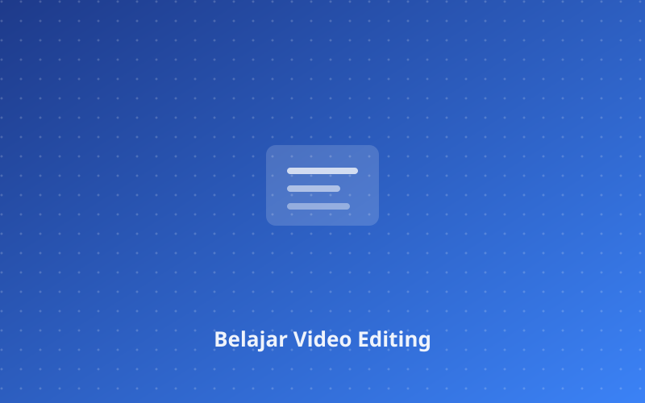
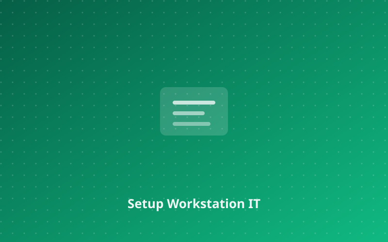
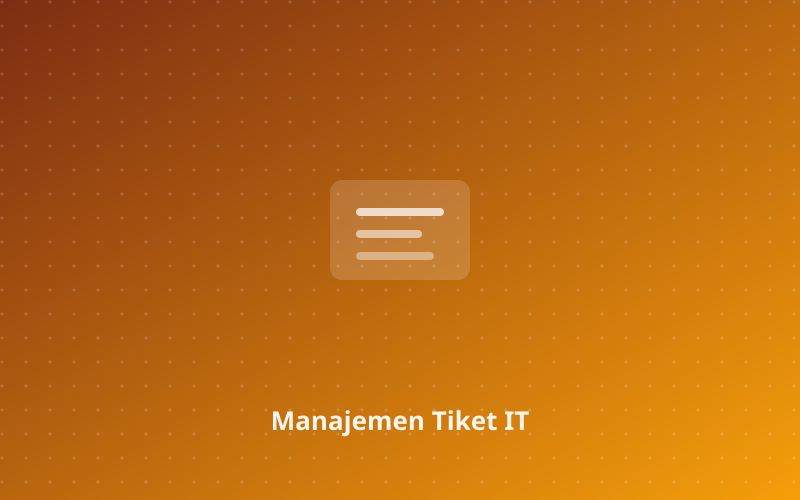

Blog Perjalanan Saya

20 Mei 2023
•
5 min read
Perjalanan Belajar Video Editing
Bagaimana saya memulai dan mengembangkan keterampilan video editing dari nol hingga profesional.
Segera hadir
15 April 2023
•
4 min read
Setup Workstation IT Support yang Efisien
Rekomendasi tools dan konfigurasi untuk meningkatkan produktivitas sebagai IT Support profesional.
Segera hadir
1 Maret 2023
•
6 min read
Best Practices Manajemen Tiket IT Support
Strategi efektif untuk menangani dan memprioritaskan tiket support tanpa kehilangan kendali.
Segera hadir